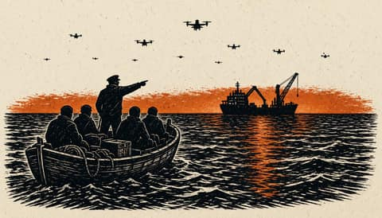
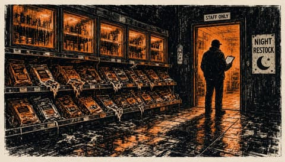
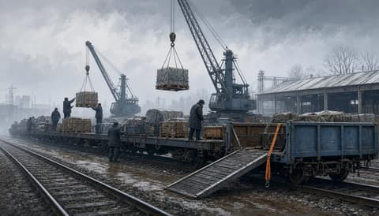
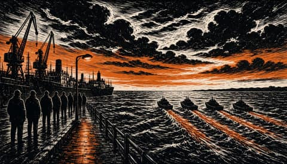
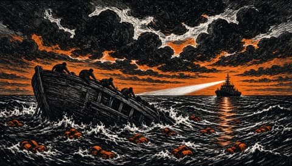
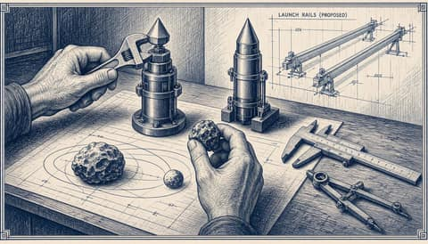
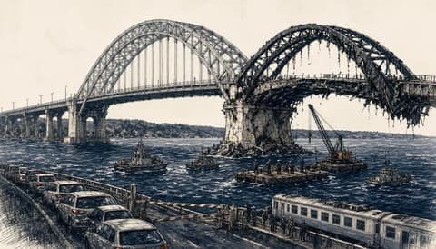

Europae Laeva
One Europe, for the many.
 Kyiv expects European-Ukrainian Freyja missile shield this winter
Kyiv expects European-Ukrainian Freyja missile shield this winter- European supercomputer JUPITER tests near-trillion-parameter training for open AI model
- Estonia plans to close all three border crossings with Russia from 1 December
- ASEAN and China provisionally agree on 80% of South China Sea code, leave binding open
- 105 US lawmakers demand answers over Starshield restrictions in Ukraine
The Harbour Ledger
News from the quay up.

Drone hits cargo ship near Romania, crane damaged, no one hurt Europe gets a seat at the next Ukraine talks, but not the deal
Europe gets a seat at the next Ukraine talks, but not the deal EU sanctions cut Russia trade to 58 billion euros but enforcement lags
EU sanctions cut Russia trade to 58 billion euros but enforcement lags Launch the Black Sea mission while Turla sits in government mail
Launch the Black Sea mission while Turla sits in government mail
French cyber agency blames Iran's Revolutionary Guard for shop fridge attack
Attacotti
Scotland's way home runs through Europe.


Europa Surgit
Europe is rising. Keep up.
- One return accord for twenty-seven beats five separate deals
- The launcher is built. Ten governments must now buy it.
- Europe can train frontier AI. Now pay for the machines to do it again
- Estonia to propose closing all land border crossings with Russia from December
- Fund the open ecosystem, not the closed copy
Nuntii Europae
News from a European perspective.

Le Pen tells Ukraine's ambassador she would end new financial aid to Kyiv- Ukraine strikes Crimean bridge with drones as Russia reports record drone interceptions
 GPS jamming suspected as seven aircraft lose position guidance over Schiphol
GPS jamming suspected as seven aircraft lose position guidance over Schiphol Drone strikes cargo ship in Romanian waters, defence minister confirms no injuries
Drone strikes cargo ship in Romanian waters, defence minister confirms no injuries- Meta's €805 million fine is not enforcement yet
Nuntii Batavi
The Netherlands, between The Hague and Brussels.


Limes
Where Europe is held.
Nothing published yet.
Leo Batavus
The Netherlands decides.
 GPS jamming suspected after seven aircraft lose signal at Schiphol
GPS jamming suspected after seven aircraft lose signal at Schiphol
Nordic defence ministers agree to develop a joint defence agreement- EU auditors say uneven enforcement blunts Russia sanctions
 French minister Barrot calls Mélenchon a spokesman for the Kremlin
French minister Barrot calls Mélenchon a spokesman for the Kremlin
At least 20 dead in two boats off Crete, minister plans EU return hubs
Europae Dexter
A sovereign Europe, argued plainly.

America struck the asteroid. The next strike must be Europe's.
Ukrainian drones strike Crimea bridge and close road and rail traffic- Moscow set the fire. Brussels must set the bill.
- Garante fines Meta 805 million euros over Facebook gallery access
- Larcher calls France's right and centre candidates to one table, raising pressure on Philippe
Europa Patriarum
A Europe of nations.
 Drone hits cargo ship MV Larissa 1, no injuries reported
Drone hits cargo ship MV Larissa 1, no injuries reported- Ukraine strikes Volgograd refinery as analyst says 55% of Russian gasoline output is down
 France blames Iran's Revolutionary Guard for cyber attack on 700 retail sites
France blames Iran's Revolutionary Guard for cyber attack on 700 retail sites Portugal rebukes NATO chief Rutte over 'flippant' missile remarks
Portugal rebukes NATO chief Rutte over 'flippant' missile remarks- Karasin says no agreement exists for Europeans to join the Abu Dhabi talks